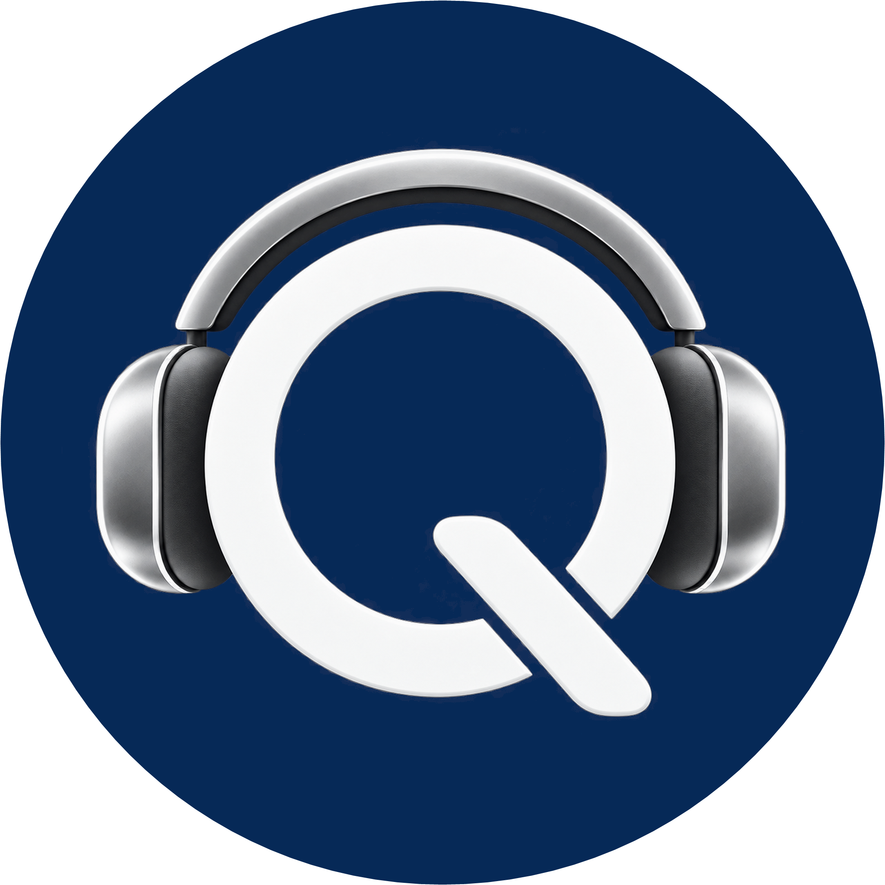

Logo actual
Claro y reconocible incluso muy pequeño. Menos expresivo y menos tridimensional.
REFERENCIALa Q y la diadema usan fondo adaptativo: libres sobre superficies oscuras y dentro de un círculo azul limpio cuando el fondo claro exige contraste. Cambia su tamaño arriba para comprobar el centrado.
Simulación con los colores, proporciones y componentes actuales de Q Session.
Conectado. Esperando la cámara del DJ…
El actual es plano y muy legible; el nuevo añade profundidad, presencia y una sensación más premium.

Claro y reconocible incluso muy pequeño. Menos expresivo y menos tridimensional.
REFERENCIACírculo azul limpio sólo sobre el fondo claro; Q centrada ópticamente y diadema completa.
EN PRUEBALa prueba crítica ocurre entre 16 y 48 píxeles: allí vemos si los auriculares y la Q siguen siendo reconocibles.
Son simulaciones visuales; ningún icono instalado fue reemplazado.
El nuevo acabado metálico convive con los mandos minimalistas sin cambiar su función ni jerarquía.
Lectura preliminar: el fondo adaptativo resuelve ambos casos: símbolo libre sobre azul oscuro; círculo azul de marca sin anillos ni adornos sobre blanco, crema o fondos variables. El centrado óptico mantiene la Q equilibrada y conserva ambas copas y el arco superior.